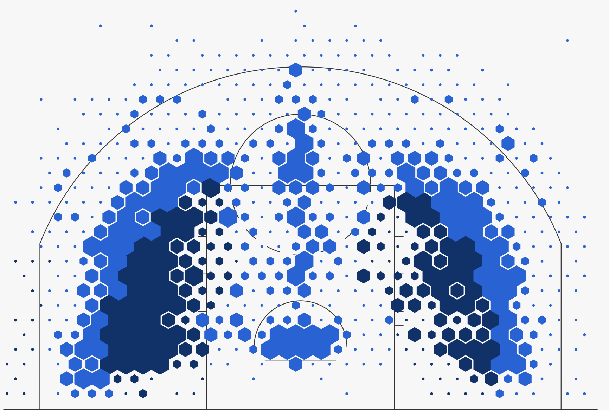
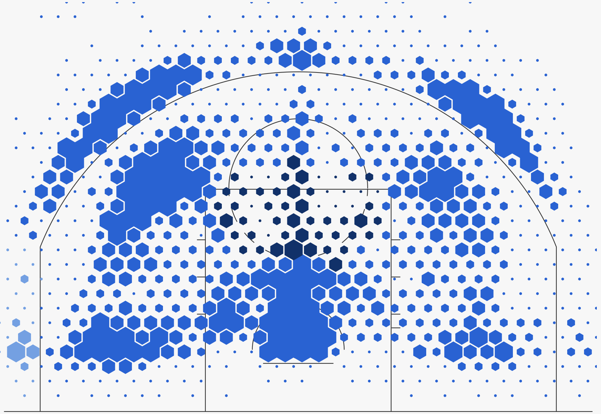
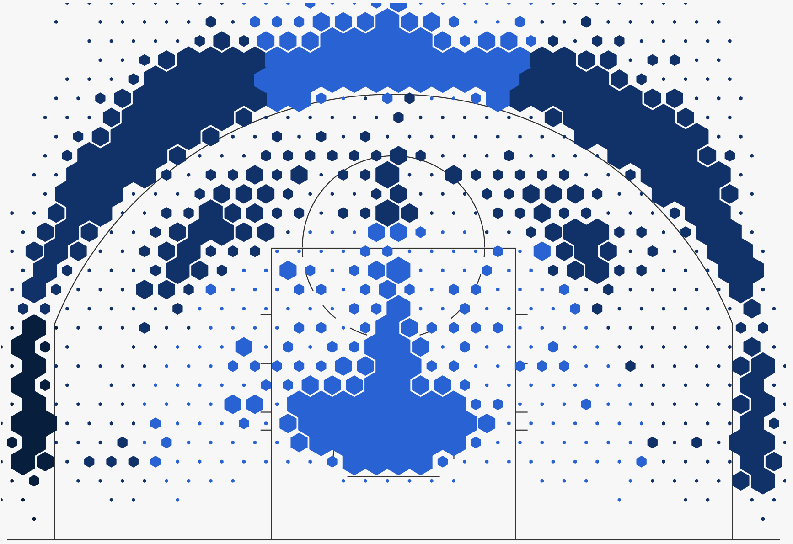
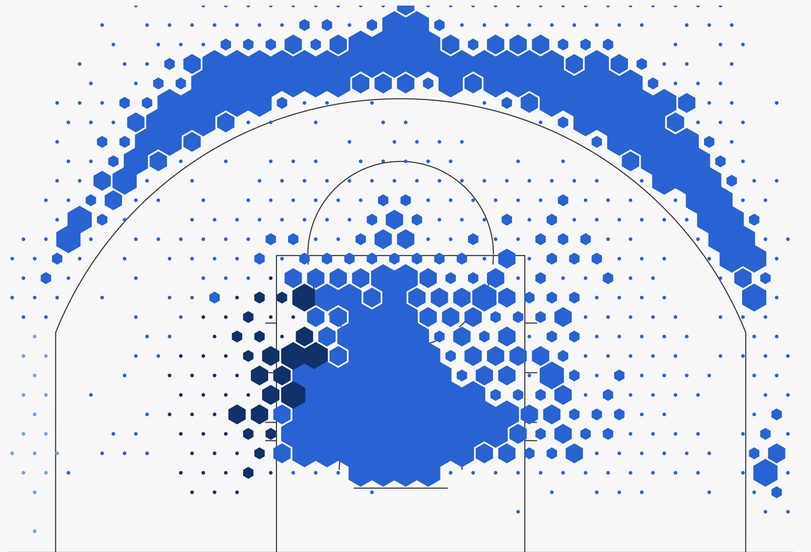
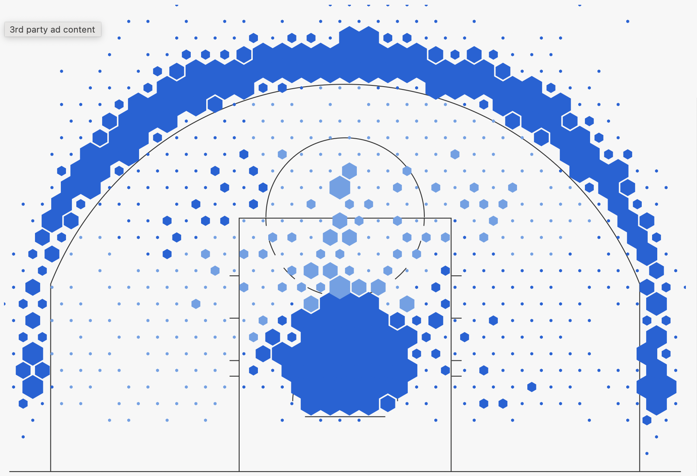

Over the past decade, the NBA has seen an explosion in the amount of three pointers being attempted around the league. Teams and players are shooting more three pointers in today's game than ever before.
Here is a chart of the league average 3 point attempts per game going back to 1980, when the 3 point shot was created in the NBA.
The chart shows a dramatic increase in three pointers attempted per game around the 2014-15 season. In this same season, Golden State Warriors point guard Stephen Curry won his first MVP award, his first championship and led the NBA in total three pointers made. From this season on, Curry's dominance continued along with his influence of the game, winning one more MVP in 2015-16 and three more championships in 2016-17, 2017-18 and 2021-22. Before Curry entered the NBA, the league's best players were not exected to shoot and make nearly as many three pointers. In today's game, it is a must if you are a top player in the league.
Below is a shot chart for two greats in the past: Michael Jordan and Kobe Bryant, Stephen Curry himself and two greats in today's game: Luka Doncic and Anthony Edwards:
Michael Jordan Shot Chart

Kobe Bryant Shot Chart

Stephen Curry Shot Chart

Luka Doncic Shot Chart

Anthony Edwards Shot Chart

The best players of the past did not shoot nearly as many threes as the best players of today. This is in large part due to Curry's influence. Even the league's best shooters did not make as many three pointers each season until Curry entered the NBA.
Below is a table of the top three pointer shooter each season in the NBA, based on how three pointers made.
Even the league's best shooters did not make as many as threes until Curry burst on the scene. In the past, making 300 threes in a game was unheard of. In today's game it is now the norm for the league's top shooters.